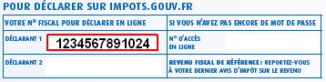
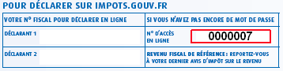
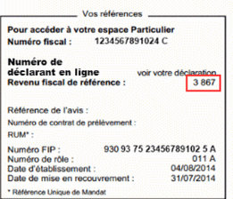
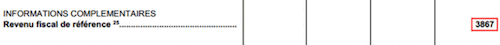
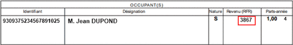

La connexion par saisie du numéro fiscal et mot de passe
Pour vous connecter à votre espace particulier, vous devez choisir un mot de passe.
Si vous avez validé votre adresse électronique et votre mot de passe en cliquant sur le lien que vous avez reçu,
vous devez vous connecter avec votre numéro fiscal et le mot de passe que vous avez précédemment saisis.
Il est important de conserver votre numéro fiscal, vous en aurez besoin pour chaque connexion.
Retour
La création d'un espace particulier
Pour créer votre espace, vous devez saisir :
- votre numéro fiscal,
- votre numéro d'accès en ligne,
- votre revenu fiscal de référence.
Ensuite, vous devez choisir votre mot de passe et saisir une adresse électronique que l'administration utilisera pour vous contacter.
Afin de valider la procédure de création de votre espace particulier, vous recevez un lien sur lequel vous devez cliquer.
Dès lors que vous aurez cliqué sur le lien, votre adresse électronique et votre mot de passe seront validés.
Retour
Mon numéro fiscal
Votre numéro fiscal est composé de 13 chiffres. Il figure en haut de la première page de votre
dernière déclaration de revenus reçue. Il est particulier et individuel. Chaque membre du foyer fiscal en possède un.

Il se trouve aussi sur votre dernier avis d'imposition ou le courrier reçu cette année (si vous
avez choisi de ne plus recevoir la version papier de la déclaration de revenus ou si vous êtes un
primo-déclarant de 20 ans et plus l'année précédente, et étiez rattaché au foyer fiscal de vos parents).
Retour
Mon numéro d'accès en ligne
Votre numéro d'accès en ligne est composé de 7 chiffres.
Il figure en haut de la première page de votre dernière déclaration de revenus reçue.

Il se trouve aussi sur le courrier reçu cette année si vous avez choisi de ne plus recevoir la version papier de la déclaration
de revenus ou si vous êtes un primo-déclarant de 20 ans et plus, et étiez rattaché l'année précédente au foyer fiscal de vos parents.
Chaque année, vous êtes titulaire d'un nouveau numéro d'accès en ligne. Saisissez bien le numéro affiché sur la dernière déclaration des revenus reçue.
Si vous n'avez pas encore reçu votre déclaration de revenus cette année, vous pouvez utiliser le numéro d'accès en ligne de l'année dernière.
Retour
Mon revenu fiscal de référence
Votre revenu fiscal de référence se trouve sur la page de garde de votre dernier avis d'impôt sur les revenus dans le cadre «Vos références».

Votre revenu fiscal de référence se trouve aussi dans le détail de votre imposition à la rubrique «informations
complémentaires» (25), s'il ne figure pas dans le cadre «Vos références» (notamment si vous avez reçu un avis de dégrèvement).

Il se trouve également sur votre dernier avis de taxe d'habitation (notamment en l'absence d'avis d'impôt sur le revenu).

Dans certains cas, il peut être égal à 0 (notamment si vous étiez rattaché au foyer fiscal de vos parents).
Si vous n'avez jamais déposé de déclaration de revenus et si vous n'étiez pas rattaché au
foyer fiscal de vos parents, vous ne pouvez pas accéder à votre espace particulier cette année.
Retour
J'ai perdu mon numéro fiscal
Sur l'écran d'authentification, un lien permet de retrouver votre numéro fiscal.
Vous devez saisir l'adresse électronique que vous avez saisie pour vos échanges avec la DGFIP,
et recopier les caractères apparaissant dans l'image. Vous recevez alors, par courriel, votre numéro fiscal.
Retour
J'ai perdu mon mot de passe
Sur l'écran d'authentification, un lien permet de renouveler votre mot de passe. Vous saisissez votre numéro
fiscal et recopiez les caractères apparaissant dans l'image. Vous recevrez alors un courriel à l'adresse que
vous avez indiquée lors de la création de votre accès. Ce lien vous permettra de renouveler votre mot de passe.
Retour
Comment modifier mon mot de passe
Pour modifier votre mot de passe, vous devez vous connecter en saisissant votre numéro fiscal et votre mot de passe.
Vous pourrez ensuite accéder au service Gérer mon profil qui vous permet de modifier votre mot de passe.
Vous devrez saisir l'ancien mot de passe et saisir deux fois le nouveau mot de passe.
Retour
Comment modifier mon adresse électronique
Pour modifier votre adresse électronique, vous devez vous connecter en saisissant votre numéro fiscal et votre
mot de passe. Vous pourrez ensuite accéder au service Gérer mon profil qui vous permet de modifier votre adresse
électronique. Un courriel vous sera adressé pour vérifier que vous avez bien accès à cette nouvelle adresse électronique.
Retour
Les services disponibles sur mon espace particulier
Dans votre espace particulier, vous pouvez payer vos impôts, déclarer vos revenus, consulter vos déclarations,
vos avis d'imposition, la situation de vos paiements, des données publiques ou encore effectuer des démarches personnalisées.
Le service Gérer mon profil vous permet de gérer votre adresse électronique, votre mot de passe et vos
numéros de téléphone. Vous pouvez également mettre à jour vos options pour la dématérialisation de vos documents.
Retour
Un accès personnalisé
L'accès à votre espace est personnalisé. Ainsi, chaque membre d'un foyer fiscal
peut accéder aux services en ligne en saisissant son propre numéro fiscal.
Chaque membre du foyer fiscal peut effectuer des opérations au nom du foyer fiscal (le paiement de
l'impôt ou la déclaration des revenus) et consulter sa propre situation fiscale personnelle.
Retour
Je rencontre des difficultés pour accéder à mon espace particulier
Après avoir saisi votre numéro fiscal et votre mot de passe, le message suivant s'affiche :
« Les données saisies sont incorrectes. Vérifiez la saisie de vos identifiants ».
Après avoir saisi vos 3 identifiants, le message suivant s'affiche :
« Les données saisies sont incorrectes. Vérifiez la saisie de vos identifiants ».
Nous vous invitons à recommencer et à vérifier la saisie de vos identifiants, en particulier le numéro fiscal.
Nous vous rappelons que pour accéder à votre espace particulier, vous devez :
- avoir déposé une déclaration des revenus l'année dernière (sur papier ou sur Internet) ;
- ou être âgé de plus de 20 ans et avoir été rattaché l'année dernière à la déclaration de vos parents.
Si vos identifiants sont correctement saisis et que le blocage persiste nous vous invitons à contacter
votre centre des Finances Publiques dont les coordonnées figurent sur votre avis d'impôt sur le revenu.
Retour
Je n'ai pas créé d'espace particulier et j'ai perdu mes 3 identifiants fiscaux
Si vous avez égaré vos documents fiscaux et ne disposez plus d'un des 3 identifiants nécessaires pour créer
votre espace particulier, nous vous invitons à contacter les services de l'administration fiscale.
Vous trouverez leurs coordonnées sur le site www.impots.gouv.fr
en cliquant le bouton «Accéder» sous la rubrique «Contact» de la page Particulier.
Retour
La configuration de mon ordinateur
La quasi-totalité des micro-ordinateurs permet d'accéder à votre espace particulier dans des conditions optimales.
Néanmoins, il est possible que de manière très marginale vous rencontriez des difficultés d'utilisation du service liées à sa configuration.
Si votre configuration n'est pas garantie pour accéder aux services en ligne, vous pouvez télécharger et installer gratuitement
un navigateur se trouvant dans la liste ci-dessous.
Vous trouverez ces navigateurs sur les sites Internet correspondants*.
Pour utiliser nos services dans les conditions optimales, il est préférable de disposer d'un ordinateur
de type PC ou Mac, équipé au minimum des éléments suivants :
- d'un écran VGA 800*600 (1024*768 recommandé) ;
- d'une connexion Internet haut débit ou, à défaut, 56K.
Configuration requise pour utiliser les services de la Direction générale des finances publiques dans les conditions optimales
| Système d'exploitation |
Navigateur |
| Windows XP |
Firefox 45 ESR, 48, 49, 50
|
| Windows Vista |
Firefox 45 ESR, 48, 49, 50
|
| Windows 7 |
Internet Explorer 11
Firefox 45 ESR, 48, 49, 50
Chrome 49, 54, 55
|
| Windows 8 |
Firefox 45 ESR, 48, 49, 50
Chrome 49, 54, 55
|
| Windows 8.1 |
Internet Explorer 11
Firefox 45 ESR, 48, 49, 50
Chrome 49, 54, 55
|
| Windows 10 |
Internet Explorer 11, Edge 13, 14
Firefox 45 ESR, 48, 49, 50
Chrome 49, 54, 55
|
| Mac OS X |
Safari 9.0, 9.1, 10
Firefox 45 ESR, 48, 49, 50
Chrome 49, 54, 55
|
| Linux |
Firefox 45 ESR, 48, 49, 50
Chrome 49, 54, 55
|
* Il vous appartient de vous assurer que la configuration de votre ordinateur est compatible avec l'utilisation des télé procédures.
Retour